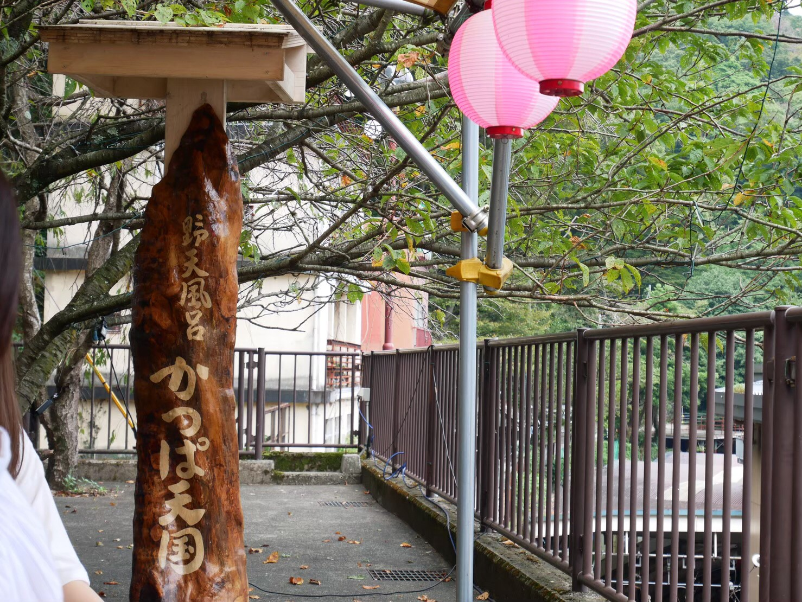
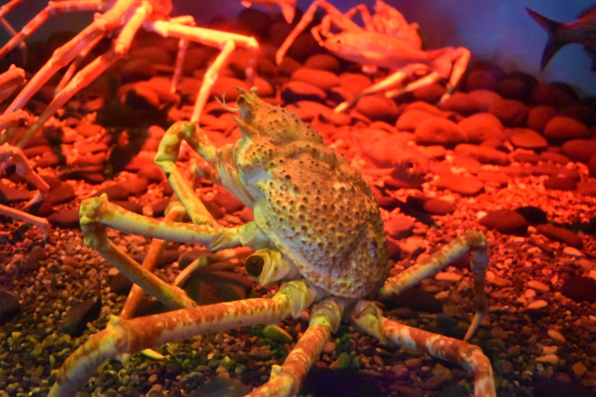

神奈川県
横浜や鎌倉，箱根をはじめとした観光地が多数ある．人口数は東京に次ぐ2位と栄えているのに対し，箱根や江の島など自然にも囲まれている．
横浜・みなとみらい
神奈川県の県庁所在地で，政令指定都市である．横浜みなとみらい21の湾岸に横浜ランドマークタワーを含む高層ビルが立ち並ぶ風景は，現在の横浜の象徴である．
観光地としても人気で，横浜中華街では小籠包や北京ダックが気軽に食べられる．
箱根

温泉街や別荘地として有名な街．足湯などは気軽に入ることが出来る．
温泉以外にも，小田急ロマンスカーやガラスの森美術館が知られている．
八景島シーパラダイス

神奈川県横浜市金沢区八景島にある水族館・遊園地・ショッピングモール・ホテルなどで構成されたレジャー施設．
水族館には様々な海洋生物が展示されていて，一部の動物とは触れ合うことが出来る．名物はマジックとイルカをかけ合わせたショー．